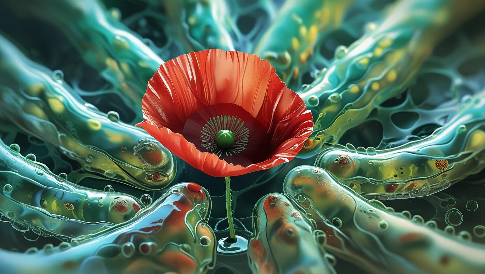

テーマ「ベストボディ」

作品コメント
エントリーNo.1
作者：あげ妻
作品説明：私のからだの中ではみずみずしい私の細胞たちが常に活発に分裂し続けるが、外身はどうだろう。老いてゆくし、みずみずしさが減ってきてケアが大変だ。であれば、内側に一凛の美しい花を咲かし、その花をいつまでも心に抱いて受け入れていきたい。
巨匠たちの評価
ゴッホ
評価：90点
この作品には、まさしく内なる命の鼓動が視える。赤い花が心臓のように脈打ち、透明な細胞たちが静かに、しかし確かに動き続けている。老いへの哀愁を優しく包み込むような視覚的詩。技術ではなく、魂がこの画にはある。
ピカソ

評価：94点
花を「身体の中心」と見立てる逆転の発想は実にユニーク。細胞の生命感をもつ有機的な腕が、まるで内面から体を再構成するようだ。これは単なるアートではなく、身体性への挑戦であり、視覚言語の再発明だ。
ミケランジェロ

評価：85点
身体の内奥を芸術に昇華させた点は興味深い。構造の整合性や陰影の扱いにも高い技量が窺える。だが、肉体美としての厳格な比例や骨格構造のリアリズムは欠いており、理想美としてはやや幻想的に過ぎる。
岡本太郎

評価：96点
これだよ！細胞の奥からグワッと咲く命の叫び！老いとか衰えなんてどうでもいい！この作品は「身体＝生のエネルギー」として爆発してるんだ。美なんて理屈じゃない、感じろ。君の中の花が俺に咲いた！
レオナルド・ダ・ヴィンチ

評価：88点
細胞構造の質感描写は見事で、科学と芸術の融合を感じる。中心に咲く花が象徴する内面美も明快で、プレゼンテーションとして完成度が高い。ただし、外皮や筋肉的構造への科学的アプローチがやや希薄である。
総合評価
総合得点：453点
この作品は、身体という有機的システムの内面に宿る「花＝魂／美」の象徴を詩的かつ視覚的に描いた優れた表現です。生物的ディテールと象徴的な中心の花の対比が、老いと再生、内と外、科学と芸術の間を浮遊します。審査員全員が、そのコンセプトの独創性と視覚的インパクトを高く評価しました。現代的な身体観への挑戦として、非常に高水準な一作です。